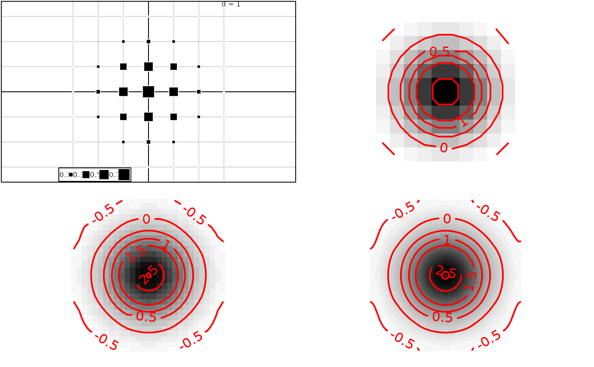

Graph of a variable using image and contour
s.image.Rdperforms a scatterplot
Usage
s.image(dfxy, z, xax = 1, yax = 2, span = 0.5, xlim = NULL, ylim = NULL,
kgrid = 2, scale = TRUE, grid = FALSE, addaxes = FALSE, cgrid = 0,
include.origin = FALSE, origin = c(0, 0), sub = "", csub = 1,
possub = "topleft", neig = NULL, cneig = 1, image.plot = TRUE,
contour.plot = TRUE, pixmap = NULL, contour = NULL, area = NULL,
add.plot = FALSE)Arguments
- dfxy
a data frame containing the two columns for the axes
- z
a vector of values on the
dfxyrows- xax
the column number of x in
dfxy- yax
the column number of y in
dfxy- span
the parameter alpha which controls the degree of smoothing
- xlim
the ranges to be encompassed by the x-axis, if NULL they are computed
- ylim
the ranges to be encompassed by the y-axis, if NULL they are computed
- kgrid
a number of points used to locally estimate the level line through the nodes of the grid, used by
kgrid*sqrt(length(z))- scale
if TRUE, data are centered and reduced
- grid
if TRUE, the background grid is traced
- addaxes
a logical value indicating whether the axes should be plotted
- cgrid
a character size, parameter used with par("cex")*
cgridto indicate the mesh of the grid- include.origin
a logical value indicating whether the point "origin" should be belonged to the graph space
- origin
the fixed point in the graph space, for example c(0,0) the origin axes
- sub
a string of characters to be inserted as legend
- csub
a character size for the legend, used with
par("cex")*csub- possub
a string of characters indicating the sub-title position ("topleft", "topright", "bottomleft", "bottomright")
- neig
an object of class
neig- cneig
a size for the neighbouring graph lines used with
par("lwd")*cneig- image.plot
if TRUE, the image is traced
- contour.plot
if TRUE, the contour lines are plotted
- pixmap
an object 'pixmap' displayed in the map background
- contour
a data frame with 4 columns to plot the contour of the map : each row gives a segment (x1,y1,x2,y2)
- area
a data frame of class 'area' to plot a set of surface units in contour
- add.plot
if TRUE uses the current graphics window
Examples
if(!adegraphicsLoaded()) {
if(requireNamespace("splancs", quietly = TRUE)) {
wxy <- data.frame(expand.grid(-3:3, -3:3))
names(wxy) <- c("x", "y")
z <- (1 / sqrt(2)) * exp(-(wxy$x ^ 2 + wxy$y ^ 2) / 2)
par(mfrow = c(2, 2))
s.value(wxy, z)
s.image(wxy, z)
s.image(wxy, z, kgrid = 5)
s.image(wxy, z, kgrid = 15)
par(mfrow = c(1, 1))
}
if (FALSE) { # \dontrun{
data(t3012)
if(requireNamespace("splancs", quietly = TRUE)) {
par(mfrow = c(3, 4))
for(k in 1:12)
s.image(t3012$xy, scalewt(t3012$temp[, k]), kgrid = 3)
par(mfrow = c(1, 1))
}
data(elec88)
if(requireNamespace("splancs", quietly = TRUE)) {
par(mfrow = c(3,4))
for(k in 1:12)
s.image(t3012$xy, scalewt(t3012$temp[, k]), kgrid = 3, sub = names(t3012$temp)[k],
csub = 3, area = elec88$area)
par(mfrow = c(1, 1))
}
} # }
}
